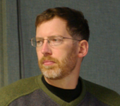

Interview with Ron Minnich Of Coreboot

SCALE: Tell us something about yourself.
Ron Minnich: I work at Sandia National Labs in High Performance Computing, an area I have worked in for 21 years. I built my first cluster in 1990, and my first PC cluster in 1994. I've been doing Linux kernel work off and on since 1996, including the first version of v9fs for 2.0.36 in 1998 (v9fs is the Plan 9 file system brought to the Linux kernel). I built my first 1024-node Linux cluster in 2002 -- which at the time was pretty large, and now is small.
SCALE: How did you come to be involved with Open Source Software?
RM: My first involvement with Open Source was in the 1970s with the original Software Tools. I guess in some ways I've been involved with Open Source for as long as I've been working with computers. Since that time I've used and contributed to many different projects.
SCALE: How about with LinuxBios / Coreboot?
RM: I started the project in 1999, so, as hard as it is to believe, ten years.
SCALE: What are your responsibilities? Have they evolved over time?
RM: In the early days, I wrote all the code. That situation has changed a lot, and nowadays I find myself writing very little code, but acting more to occasionally try to steer the project in ways that make sense. For example, we needed to move to
a new filesystem-like ROM format developed by AMD, and at some point it became important to force that change through. Most recently, three of us made the changeover to using Linux Kernel config tools for building coreboot. What we really did is create proof-of-concepts for 5 or 10 boards, and the coreboot community jumped in and did the rest for the remaining 150 or so boards -- it was quite amazing to watch all the fine work people did!
In many ways, I am happy to see that a lot of really good ideas and changes come from other people -- for instance, our new PCI setup code, the new flash tools, our new logo, the recent cover story in Linux Journal, or a very important new technology called SerialIce, developed by Core Systems GMBH (see: http://www.coreboot.org/SerialICE). It's important that the project be distributed over many people, rather than having one person be a "single point of failure". I am glad to say that in most cases the new good ideas and work come from others on the team, not me.
SCALE: What are some recent successes of the Coreboot project?
RM: SerialIce is a huge success. It allows us to use qemu and gdb to run the BIOS and observe the I/O and memory activity, so we can find all the important little chipset details that the documentation leaves out.
But, one of the biggest successes won't be announced until Christmas, so we'll have to wait :-)
SCALE: How do the motherboard vendors view the Coreboot project?
RM: The motherboard vendors we talk to like it. We have frequent requests to do a port. There are many motherboard vendors out there using Coreboot, invisible to many people, on routers and kiosks and other embedded systems. The only bad news is that those vendors are under intense and continuing pressure from a few chipset vendors to move from Coreboot to a proprietary, closed-source alternative.
In the end, open source wins. I think that if the x86 market continues to move to closed systems, and keeps trying to force people to use closed-source BIOSes, then the users will move to open systems like ARM and MIPS, which have very nice open source BIOS solutions such as U-Boot.
SCALE: How about the BIOS vendors?
RM: Just as the proprietary OS vendors did not like to see Linux grow, so do the BIOS vendors dislike the idea of an open source BIOS. I think in the long run, however, open source will win.
SCALE: Any contacts with systems integrators or PC houses?
RM: Many, over the years. Some have come and gone, and some have been constant friends.
SCALE: Where do you see the project going in the near future? Any long term plans?
RM: Near term, we see various governments becoming very interested in open source BIOS systems, due to concerns about cybersecurity. BIOSes such as EFI are now little operating systems, and the surface area for exploits is enormous; there is justifiable concern about the security of such closed-source, proprietary BIOSes, given the kind of exploits we have seen publicized in the last few years in conferences such as Black Hat. There should be some very interesting announcements in December along these lines.
Longer term, we expect the slow but inexorable growth in platform
support that we have seen in the last 10 years. It seems to take about 10-15 years for an open source technology to really take off. That always seems too long, but that's been my observation. But I am hearing more and more enthusiasm for the concept of open platforms, down to the BIOS level; conversely, I am hearing more and more concerns about the cybersecurity issues that come with closed-source BIOSes.
SCALE: Thanks for taking the time to talk to us, Ron!
RM: Thanks